As ferramentas de validação atualmente disponíveis são capazes de identificar e resolver diversos problemas geométricos que ocorrem no processo de produção de geoinformação vetorial. Essas ferramentas são um primeiro passo na garantia da qualidade geométrica. Nos itens seguintes será mostrado o objetivo de cada ferramenta e como usá-las.
O primeiro passo para usar as ferramentas de validação é selecionar o banco de dados EDGV que se deseja validar geometricamente. Isso se faz clicando no botão "Abrir" como se pode ver na figura 37.
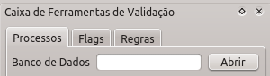
Com a seleção do banco de dados desejado é possível ver a lista de processos disponíveis. Atualmente existem 20 processos disponíveis. Na próxima seção serão analisados, em detalhes, cada um desses processos.
Todos os processos funcionam em todas as camadas existente no banco de dados selecionado. Existem processos de identificação de erros e processos de correção de erros. Os processos de identificação apenas levantam flags (erros marcados para posterior análise do operador) enquanto que os processos de correção executam modificações nas camadas, deixando-as em modo edição para posterior análise do operador. Caso tudo esteja conforme o esperado, o operador pode salvar as modificações e prosseguir com a validação.
Processo que usa o GRASS de forma semelhante ao "Limpar geometrias", porém ele apenas executa o snap. Este processo produz resultados semelhantes ao "Snap recursivo", porém usando a topologia do GRASS, sendo assim ele é mais recomendado.
O processo de colar linhas na moldura prolonga linhas e faz o snap das mesmas para a moldura do produto. O processo densifica a moldura criando novos vértices nela que são usados no processo de fechamento de áreas usado no processo "Fechar polígonos de Cobertura Terrestre". Da mesma forma como o processo de identificação de linhas pequenas é necessário que o operador informe a tolerância para o processo.
O funcionamento do processo trabalha em situações como a presente na figura abaixo.
Gerando o resultado presente na figura abaixo.
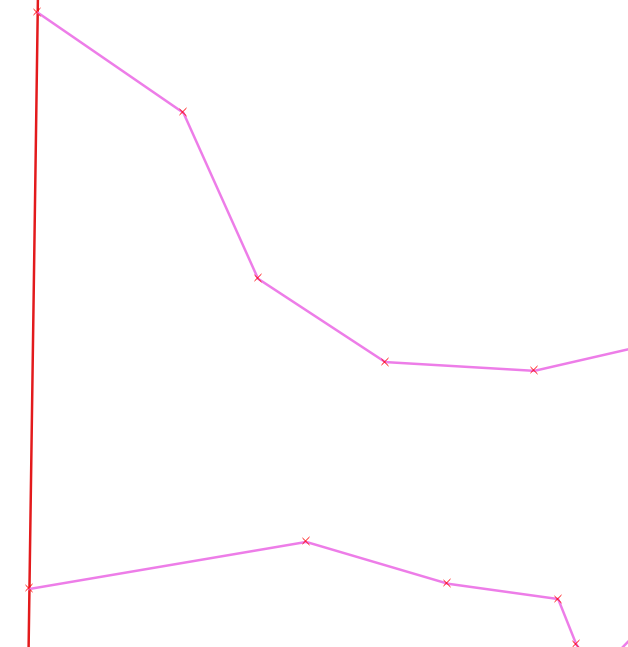
Este processo funciona com o uso da função ST_SnapToGrid do PostGIS. O objetivo desta ferramenta é ajustar a precisão das coordenadas. Ele é essencial para que os processamentos topológicos corretamente, para garantir que, por exemplo, duas geometrias se toquem de fato.
Sem o uso desse processo, mesmo que duas geometrias teoricamente se toquem (por terem sido adquiridas com o snap do QGIS ligado), não é possível obter o resultado esperado de uma relação de "toca" por exemplo.
Resumindo, esse processo deve ser rodado para, por exemplo, transformas uma coordenada com 17 casas decimais para uma coordenada com apenas 3 casa decimais (ficando limitada aos milímetros, o que é suficiente).
Esse processo separa multigeometrias facilitando o processamento das mesmas pelo banco de dados.
Para este processo funcionar é necessário que já haja uma configuração de cobertura terrestra já existente para o banco de dados selecionado..
O processo funciona realizando a criação de polígonos delimitados por feições lineares conforme estipulado na configuração de cobertura terrestre. Para cada área criada é feita a verificação da existência ou não de centróides (feições pontuais que contém os atributos da área delimitada). Caso haja apenas um centróide todos os atributos são copiados para a classe correspondente, finalizando a criação do polígono componente da cobertura terrestre. Caso não haja centróide ou haja centróides conflitantes em uma mesma área há a criação de flags para posterior intervenção do operador.
A figura abaixo mostra um exemplo de uso da ferramenta.

Esse processo funciona com o uso da função ST_MakeValid do PostGIS. Ele roda em todas as feições levantadas pelo processo "Identificar geometrias inválidas". A figura abaixo mostra o antes e depois do processo para um caso de auto interseção.
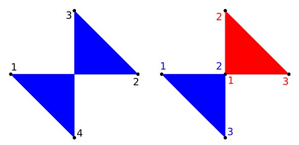
Processo que identifica geometrias repetidas no banco de dados. Para cada geometria duplicada é levantada uma flag.
Este processo funciona com o uso da função ST_IsValid do PostGIS. Sendo assim, polígonos com auto interseção ou conforme os presentes na figura abaixo são inválidos e, portanto, identificados por meio de flags.
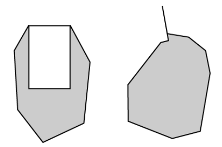
O processo funciona gerando flags para geometrias não simples. O conceito pode ser visto na figura abaixo onde os elementos (b) e (d) são não simples e os elementos (a) e (c) são simples.
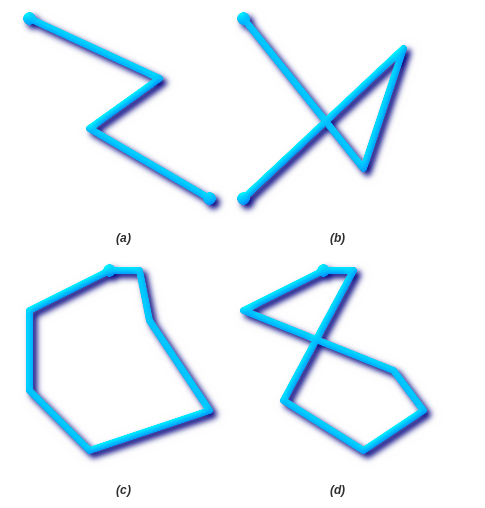
Este processo funciona de maneira simples, ele apenas identifica, de acordo com um comprimento limite, linhas pequenas e levanta flags para cada uma delas.
Este processo necessita da entrada de uma tolerância pelo operador para identificar os vértices que são considerados errôneos por estarem muito próximo a arestas. A entrada da tolerância é feita por meio da janela da figura abaixo que é mostrada ao operador no momento da execução do processo.
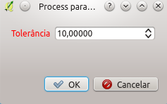
O funcionamento pode ser exemplificado com o uso da feição mostrada na figura 45. O vértice em destaque com o quadrado amarelo será identificado e levantado como flag por estar a uma distância menor que a tolerância da aresta presente logo abaixo dele.
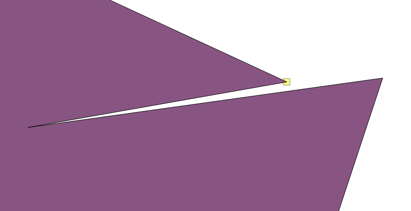
Processo que funciona exatamente como o "Identificar linhas pequenas", porém a tolerância usada é a área mínima a ser usada.
Este processo funciona identificando vértices de feições do tipo linha e área que formam ângulos fora de um limite pré-estabelecido. Este limite deve ser entrado pelo operador no momento de execução do processo. Na figura xx pode-se ver a entrada do valor de 10° como limite.
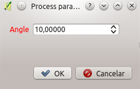
Considere que as feições analisadas são conforme a figura abaixo.
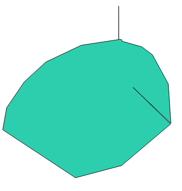
Quando finalizado, o processo levantará flags para posterior intervenção do operador marcando os vértices mostrados na figura 48.
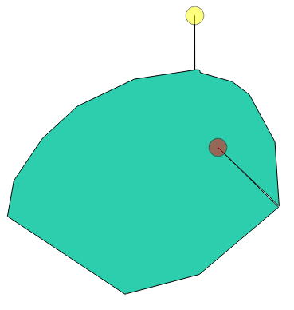
Este processo funciona com o uso do GRASS, executando os seguintes passos:
Resumindo, problemas como os presentes na figura abaixo são resolvidos automaticamente gerando os resultados presentes na figura seguinte.
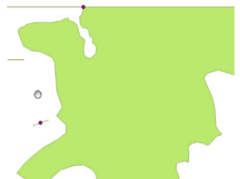
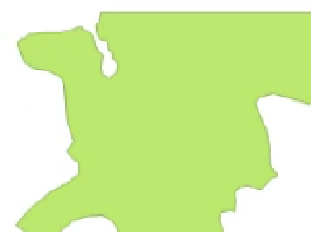
Processo de remoção que funciona usando as flags levantadas pelo processo "Identificar geometrias duplicadas".
Este processo é simples, ele funciona removendo feições cuja as geometrias são nulas. Ao término do processo é possível ver em detalhes quantas feições foram removidas abrindo-se o log de mensagens do QGIS.
Este processo funciona removendo feições a partir das flags levantadas pelo processo "Identificar linhas pequenas".
Este processo necessita de uma configuração de regras topológicas para funcionar. Essa definição de regras é feita por meio da aba "Regras" na Caixa de ferramentas de validação. O acesso ao editor de regras é feito por meio do botão "Mostrar editor de regras espaciais". Ao se clicar nesse botão o diálogo presente na figura abaixo será mostrado.

A edição de regras é bem simples, tudo é feito a partir de seleções nos campos mostrados na figura abaixo.

Ao fim da seleção dos valores de "Camada #1", "Necessidade", "Predicado espacial", "Camada #2" e "Cardinalidade" deve-se clicar em "Inserir Regra" para adicioná-la a lista de regras já existentes. Da mesma forma, é possível remover regras clicando-se em uma já existente e posteriormente clicando em "Remover Regra". Ao término do processo deve-se clicar em "Ok" para salvar a configuração de regras.
Agora resta ao operador rodar o processo para que sejam levantadas flags para cada erro levantado no verificação das regras.
Este processo funciona dentro de cada camada e pode ser útil na resolução de problemas como o presente na figura abaixo. Os resultados são semelhantes aos obtidos pelo processo "Colar geometrias", porém o Snap Recursivo não usa uma estrutura topológica.
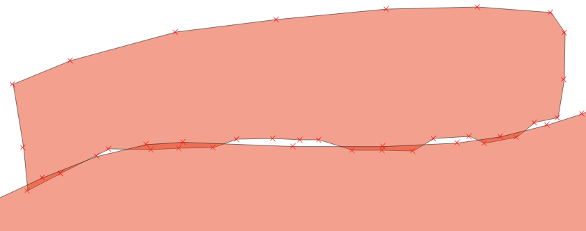
Assim como os processo de identificação de vértices próximo a arestas, este processo necessita de uma tolerância informada pelo operador. Com a indicação da tolerância o processo executa a correção dos problemas citados como se pode ver na figura abaixo.
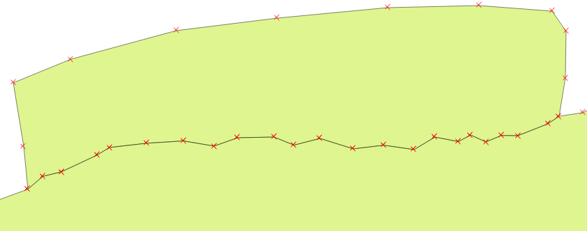